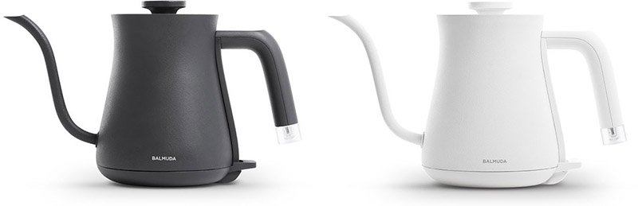
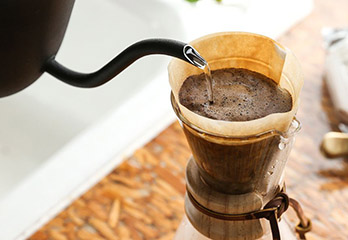
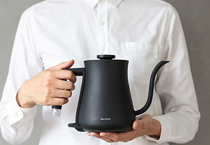
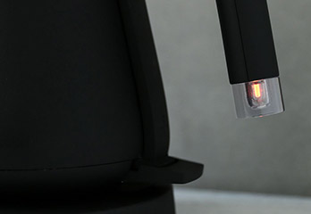
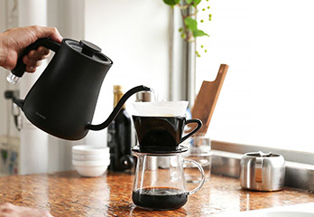

- 작고 아름다운,
-
BALMUDA The Pot은, 매일 사용하고 싶어지는
지금까지 없었던 아름다운 디자인의 전기 주전자입니다.
- 매일 사용하고 싶어지는 전기 주전자
- 600ml / 스테인리스
BALMUDA The Pot은 커피와 차의 풍미를 더욱 끌어올려 줍니다.
여러분의 티타임이 더욱 즐거워지는 다양한 차 만드는 법을 소개합니다.
-
 디자인
수납공간을 크게 차지하지 않는 600ml의 실용적인 사이즈.
물을 부을 때 가장 좋은 느낌을 주는 노즐과 손잡이 모양.
매일 간편하고 기분 좋게 사용할 수 있도록 디자인했습니다.
디자인
수납공간을 크게 차지하지 않는 600ml의 실용적인 사이즈.
물을 부을 때 가장 좋은 느낌을 주는 노즐과 손잡이 모양.
매일 간편하고 기분 좋게 사용할 수 있도록 디자인했습니다.
-

커피, 차, 컵라면
핸드 드립을 할 때 쉽고 깔끔하게 물을 부을 수 있는 노즐과 핸들은 어떤 형태인지 고민했습니다. 바리스타들의 의견을 참고하여 The Pot은 지금의 모양이 되었습니다. 커피 뿐만 아니라 차와 컵라면 등 뜨거운 물이 필요한 곳이면 어디든 알맞은 물줄기로 물을 부을 수 있도록 디자인했습니다.
-

가볍고 실용적인 사이즈
커피 3잔, 컵라면 2인분 등. 일상에서 자주 사용하는 양을 고려한 실용적인 사이즈로 한 손으로 가볍게 들어 편하게 사용할 수 있는 전기 주전자입니다.
-
 기분 좋은 물 붓기
오랜 연구 끝에 만들어 낸 손잡이와 노즐은 물을 부을 때 기분 좋은 감성을 느끼게 합니다. 손잡이는 최고의 그립감을 느낄 수 있고, 노즐은 원하는 곳에 정확하고 깔끔하게 물을 부을 수 있도록 설계되었습니다.
기분 좋은 물 붓기
오랜 연구 끝에 만들어 낸 손잡이와 노즐은 물을 부을 때 기분 좋은 감성을 느끼게 합니다. 손잡이는 최고의 그립감을 느낄 수 있고, 노즐은 원하는 곳에 정확하고 깔끔하게 물을 부을 수 있도록 설계되었습니다.
-

일상 속 은은하게 빛나는 불빛
어디에서나 잘 보이는 작동 표시 램프는 작은 네온관을 사용하여 독특하고 아름다운 분위기를 자아냅니다. 은은하게 빛나는 불빛이 뜨거운 물을 끓이는 잠깐의 시간마저도 행복하게 만들어줍니다.
-

물을 붓는 속도를 자유롭게
립 커피는 천천히, 컵라면은 빠르게. 힘을 들이지 않고 유속을 조절할 수 있어 뜨거운 물이 필요한 모든 곳에 알맞은 물줄기를 만들어냅니다.